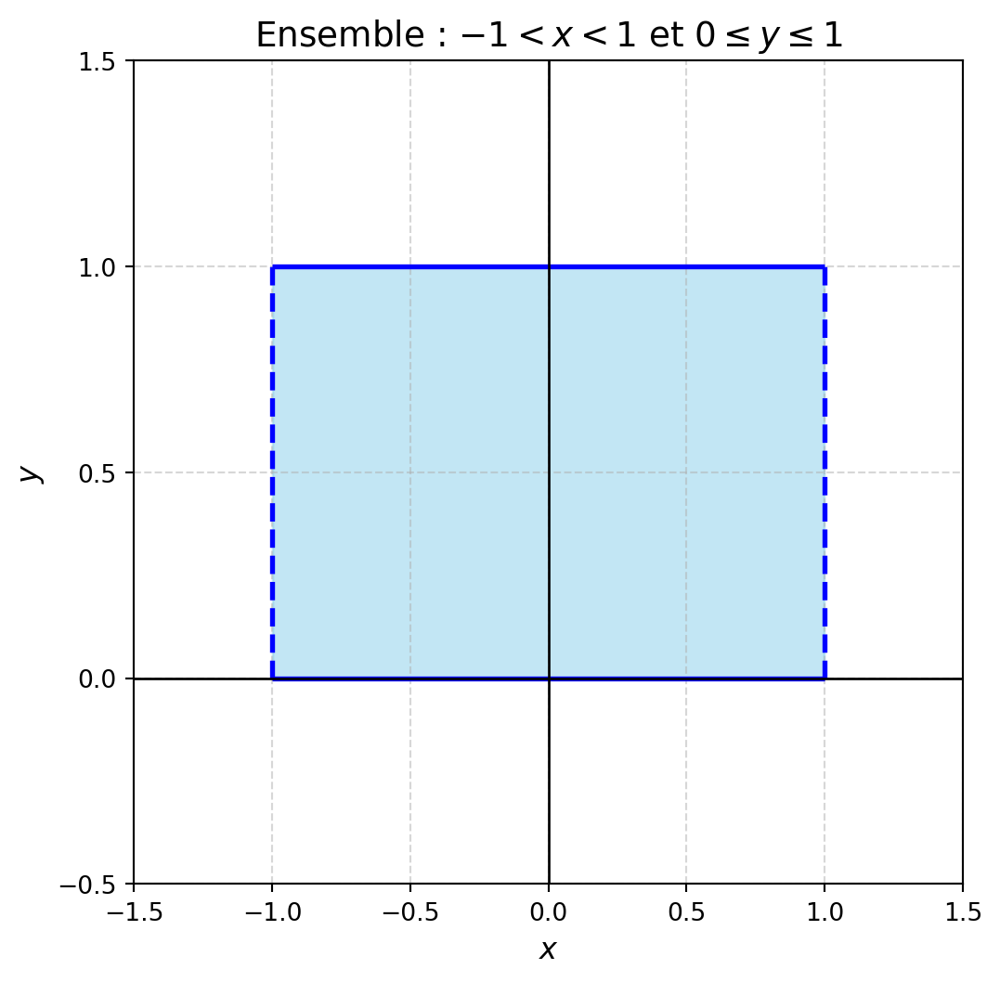
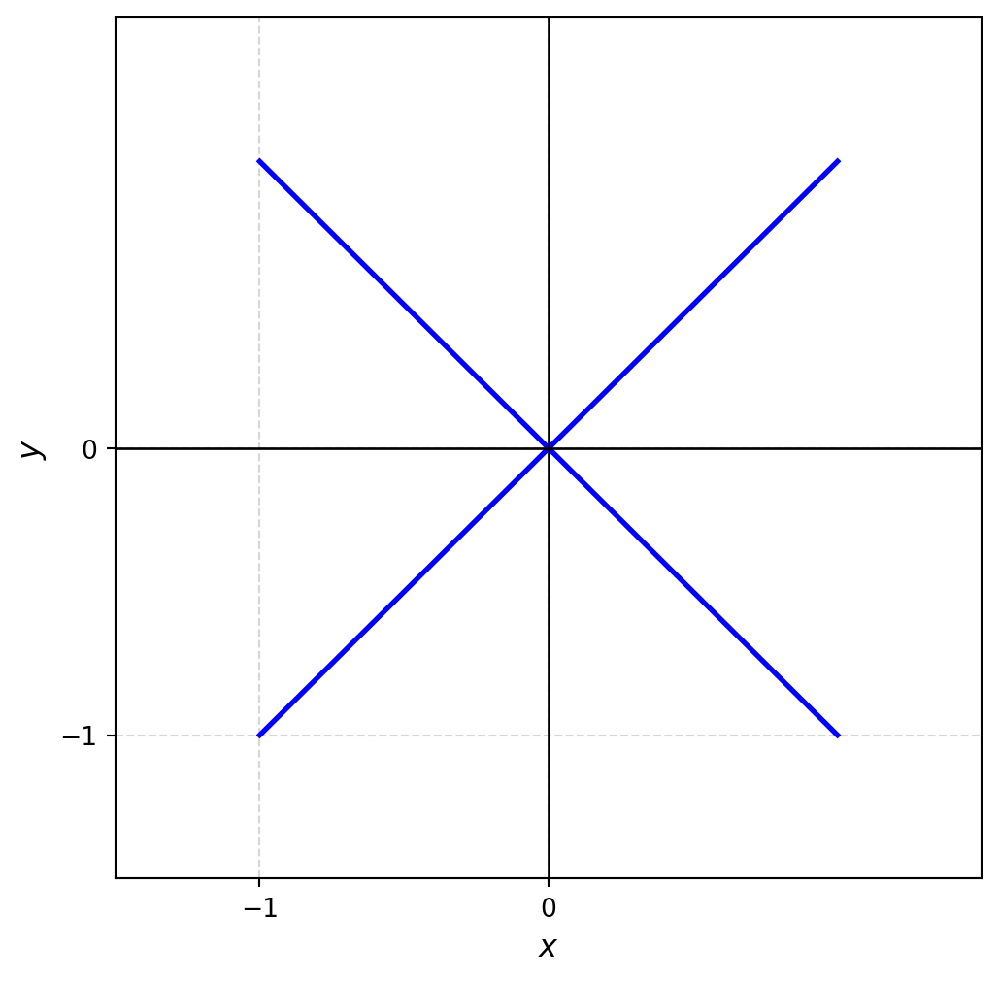
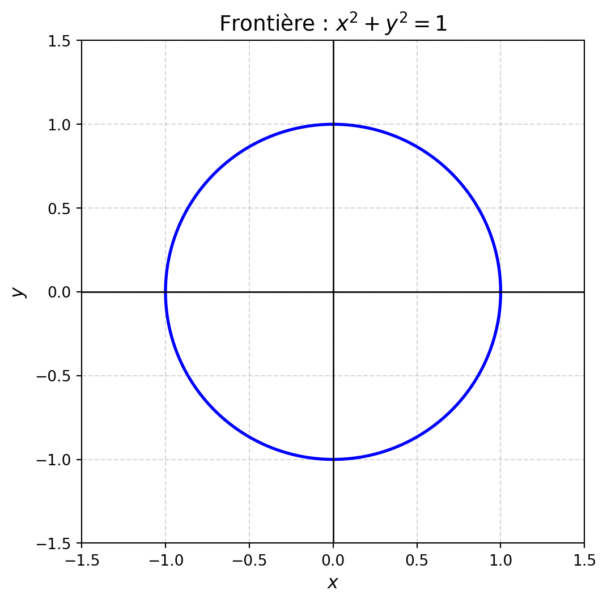

Soit \(P(x_1,y_1)\) et \(Q(x_2,y_2)\) des éléments de \(\mathbb{R}^2\). Déterminez si les fonctions suivantes sont des métriques sur \(\mathbb{R}^2\). Dans chacun des cas, justifiez votre réponse.
\(d(P,Q) = |x_1-x_2| + |y_1-y_2|\)
Solution. Oui, c’est la distance euclidienne.
\(d(P,Q) = |x_1-x_2| \cdot |y_1-y_2|\)
Solution. Non, par exemple \(d((1,0),(1,1))=0\) alors que les points \((1,0)\) et \((1,1)\) sont distincts. Cela contredit la propriété d’une métrique voulant que \(d(P,Q)=0\Rightarrow P=Q\).
\(d(P,Q) = |x_1+x_2| + |y_1+y_2|\)
Solution. Non, par exemple \(d((1,0),(-1,0))=0\) alors que les points \((1,0)\) et \((-1,0)\) sont distincts. Cela contredit la propriété d’une métrique voulant que \(d(P,Q)=0\Rightarrow P=Q\).
Question 2
Soit l’espace métrique \(\left(\mathbb{R}^2,d\right)\), où \(d\) est la métrique définie par \[
d\left((x_1,y_1),(x_2,y_2)\right) = |x_1-x_2| + 2|y_1-y_2|.
\] Dessinez la boule ouverte centrée à l’origine de rayon \(r\).
Solution. L’intérieur du losange de sommets \(\left(0,\frac{1}{2}\right), \left(1,0\right), \left(0,-\frac{1}{2}\right), \left(-1,0\right)\).
Question 3
Est-ce que l’espace métrique \(\left(\mathbb{R} \setminus \mathbb{Q}, d_E\right)\) est complet? Justifiez.
Solution. Non. Il suffit de considérer une suite de nombres irrationnels qui converge vers un nombre rationnels. Par exemple, la suite \((x_n)\) où \(x_n=\frac{\sqrt{2}}{n}\) est une suite de Cauchy dans \(\mathbb{R} \setminus \mathbb{Q}\) qui converge vers \(0\), un nombre qui n’est pas dans cet ensemble.
Question 4
Donnez le terme général d’une suite \((x_n)\) de nombres rationnels qui converge vers \(\sqrt{2}\), faisant de \(\left(\mathbb{Q}, d_E\right)\) un espace métrique qui n’est pas complet.
Solution. Plusieurs réponses possibles, le graphe de la fonction \(f(x)=x^2-2\) et la construction de tangentes bien choisies peut vous suggérer une méthode.
Question 5
Vrai ou faux avec justification. Soit \((x_n)\) une suite dans un espace métrique \(\left(E,d\right)\). Si \[
d(x_n,a) < \frac{1}{n} \text{ pour tout } n \geq 1000,
\] alors \(a \in E\).
Solution. Faux, la suite considérée à la question 3 fourni un contre-exemple.
Question 6
Pour chacun des ensembles ci-dessous, considérés dans l’espace métrique \(\left(\mathbb{R}^2, d_E\right)\), déterminez lesquelles des caractéristiques suivantes sont possédées par l’ensemble : Fermé, Ouvert, Borné, Compact. Donnez aussi une représentation graphique de l’ensemble.
\(\left\{(x,y)\in\mathbb{R}^2 : -1 < x < 1 ~\text{et}~ 0 \leq y \leq 1\right\}\)
Solution. Borné
Code
import matplotlib.pyplot as pltimport numpy as np# Création de la figure et des axesfig, ax = plt.subplots(figsize=(6, 6))# Dessiner la région remplie entre x = -1 et x = 1, y entre 0 et 1x_fill = np.linspace(-1, 1, 1000) # Points pour remplir le rectangley_bottom = np.zeros_like(x_fill) # Bas de la région y = 0y_top = np.ones_like(x_fill) # Haut de la région y = 1ax.fill_between(x_fill, y_bottom, y_top, where=(x_fill >-1) & (x_fill <1),color='skyblue', alpha=0.5, label='-1 < x < 1, 0 ≤ y ≤ 1')# Tracer les segments horizontaux (inclus dans l'ensemble)ax.hlines(y=0, xmin=-1, xmax=1, color='blue', linestyle='-', linewidth=2)ax.hlines(y=1, xmin=-1, xmax=1, color='blue', linestyle='-', linewidth=2)# Tracer les lignes verticales pointillées aux limites x = -1 et x = 1 dans y ∈ [0, 1]y_vertical = np.linspace(0, 1, 100) # y de 0 à 1ax.plot([-1] *len(y_vertical), y_vertical, 'b--', linewidth=2) # x = -1ax.plot([1] *len(y_vertical), y_vertical, 'b--', linewidth=2) # x = 1# Ajouter les axes x et y qui s'intersectent en (0,0)ax.axhline(0, color='black', linewidth=1) # Axe des xax.axvline(0, color='black', linewidth=1) # Axe des y# Configuration des limites et des graduationsax.set_xlim(-1.5, 1.5)ax.set_ylim(-0.5, 1.5)ax.set_xticks(np.arange(-1.5, 1.6, 0.5)) # Graduations sur xax.set_yticks(np.arange(-0.5, 1.6, 0.5)) # Graduations sur y# Étiquettes des axesax.set_xlabel('$x$', fontsize=12)ax.set_ylabel('$y$', fontsize=12)ax.set_title(r"Ensemble : $-1 < x < 1$ et $0 \leq y \leq 1$", fontsize=14)# Affichage de la grille pour une meilleure lisibilitéax.grid(True, linestyle='--', alpha=0.5)# Affichage du graphiqueplt.show()

\(\left\{(x,y)\in\mathbb{R}^2 : y = x^2\right\}\)
Solution. Fermé
Code
import matplotlib.pyplot as pltimport numpy as np# Création de la figure et des axesfig, ax = plt.subplots(figsize=(6, 6))# Définir les données pour la parabole y = x^2x = np.linspace(-3, 3, 1000) # Points entre -3 et 3y = x**2# Parabole# Tracer la paraboleax.plot(x, y, color='blue', linewidth=2)# Ajouter les axes x et y qui s'intersectent en (0, 0)ax.axhline(0, color='black', linewidth=1) # Axe des xax.axvline(0, color='black', linewidth=1) # Axe des y# Configuration des limites et des graduationsax.set_xlim(-3.5, 3.5)ax.set_ylim(-0.5, 10)ax.set_xticks(np.arange(-3, 4, 1)) # Graduations sur xax.set_yticks(np.arange(0, 11, 2)) # Graduations sur y# Étiquettes des axesax.set_xlabel('$x$', fontsize=12)ax.set_ylabel('$y$', fontsize=12)ax.set_title(r"Parabole $y = x^2$", fontsize=14)# Affichage de la grille pour une meilleure lisibilitéax.grid(True, linestyle='--', alpha=0.5)# Affichage du graphiqueplt.show()
import matplotlib.pyplot as pltimport numpy as np# Création de la figure et des axesfig, ax = plt.subplots(figsize=(6, 6))x = np.linspace(-1, 1, 1000) # Points entre -3 et 3y = x# Tracer la paraboleax.plot(x, y, color='blue', linewidth=2)y=-xax.plot(x, y, color='blue', linewidth=2)# Ajouter les axes x et y qui s'intersectent en (0, 0)ax.axhline(0, color='black', linewidth=1) # Axe des xax.axvline(0, color='black', linewidth=1) # Axe des y# Configuration des limites et des graduationsax.set_xlim(-1.5, 1.5)ax.set_ylim(-1.5, 1.5)ax.set_xticks(np.arange(-1, 1, 1)) # Graduations sur xax.set_yticks(np.arange(-1, 1, 1)) # Graduations sur y# Étiquettes des axesax.set_xlabel('$x$', fontsize=12)ax.set_ylabel('$y$', fontsize=12)# Affichage de la grille pour une meilleure lisibilitéax.grid(True, linestyle='--', alpha=0.5)# Affichage du graphiqueplt.show()

\(\left\{(x,y)\in\mathbb{R}^2 : 0 < y < 1\right\}\)
Solution. Ouvert
Code
import matplotlib.pyplot as pltimport numpy as np# Création de la figure et des axesfig, ax = plt.subplots(figsize=(6, 6))# Dessiner la région remplie entre x = -1 et x = 1, y entre 0 et 1x_fill = np.linspace(-2, 2, 1000) # Points pour remplir le rectangley_bottom = np.zeros_like(x_fill) # Bas de la région y = 0y_top = np.ones_like(x_fill) # Haut de la région y = 1ax.fill_between(x_fill, y_bottom, y_top, where=(x_fill >-2) & (x_fill <2),color='skyblue', alpha=0.5, label='0 < y < 1')# Tracer les segments horizontaux (inclus dans l'ensemble)ax.hlines(y=0, xmin=-2, xmax=2, color='blue', linestyle='--', linewidth=2)ax.hlines(y=1, xmin=-2, xmax=2, color='blue', linestyle='--', linewidth=2)# Tracer les lignes verticales pointillées aux limites x = -1 et x = 1 dans y ∈ [0, 1]# y_vertical = np.linspace(0, 1, 100) # y de 0 à 1# ax.plot([-1] * len(y_vertical), y_vertical, 'b--', linewidth=2) # x = -1# ax.plot([1] * len(y_vertical), y_vertical, 'b--', linewidth=2)# x = 1# Ajouter les axes x et y qui s'intersectent en (0,0)ax.axhline(0, color='black', linewidth=1) # Axe des xax.axvline(0, color='black', linewidth=1) # Axe des y# Configuration des limites et des graduationsax.set_xlim(-2, 2)ax.set_ylim(-0.5, 1.5)ax.set_xticks(np.arange(-1.5, 1.6, 0.5)) # Graduations sur xax.set_yticks(np.arange(-0.5, 1.6, 0.5)) # Graduations sur y# Étiquettes des axesax.set_xlabel('$x$', fontsize=12)ax.set_ylabel('$y$', fontsize=12)# Affichage de la grille pour une meilleure lisibilitéax.grid(True, linestyle='--', alpha=0.5)# Affichage du graphiqueplt.show()
import matplotlib.pyplot as pltimport numpy as np# Création de la figure et des axesfig, ax = plt.subplots(figsize=(6, 6))# Générer les points pour tracer la frontière |x| + |y| = 1x = np.linspace(-1, 1, 500) # Intervalle pour xy1 =1- np.abs(x) # y positif pour la frontièrey2 =-(1- np.abs(x)) # y négatif pour la frontière# Tracer la région remplie à l'intérieur de la frontièrex_fill = np.linspace(-1, 1, 500)for x_i in x_fill: ax.fill_between([x_i], -(1-abs(x_i)), 1-abs(x_i), color='skyblue', alpha=0.5)# Tracer la frontière en pointillés (|x| + |y| = 1)ax.plot(x, y1, 'b--', linewidth=2) # Partie supérieureax.plot(x, y2, 'b--', linewidth=2) # Partie inférieure# Ajouter les axes x et y qui s'intersectent en (0,0)ax.axhline(0, color='black', linewidth=1) # Axe des xax.axvline(0, color='black', linewidth=1) # Axe des y# Configuration des limites et des graduationsax.set_xlim(-1.2, 1.2)ax.set_ylim(-1.2, 1.2)ax.set_xticks(np.arange(-1, 1.1, 0.5)) # Graduations sur xax.set_yticks(np.arange(-1, 1.1, 0.5)) # Graduations sur y# Étiquettes des axesax.set_xlabel('$x$', fontsize=12)ax.set_ylabel('$y$', fontsize=12)ax.set_title(r"Région : $|x| + |y| < 1$", fontsize=14)# Affichage de la grille pour une meilleure lisibilitéax.grid(True, linestyle='--', alpha=0.5)# Affichage du graphiqueplt.show()
import matplotlib.pyplot as pltimport numpy as np# Création de la figure et des axesfig, ax = plt.subplots(figsize=(6, 6))# Paramètres pour tracer le cercle x^2 + y^2 = 1theta = np.linspace(0, 2* np.pi, 1000) # Paramètre pour la circonférencex = np.cos(theta) # Coordonnées x sur le cercley = np.sin(theta) # Coordonnées y sur le cercle# Tracer la frontière du cercle en pointillésax.plot(x, y, linestyle='-', color='blue', linewidth=2, label=r'$x^2 + y^2 = 1$')# Ajouter les axes x et y qui s'intersectent en (0,0)ax.axhline(0, color='black', linewidth=1) # Axe des xax.axvline(0, color='black', linewidth=1) # Axe des y# Configuration des limites et des graduationsax.set_xlim(-1.5, 1.5)ax.set_ylim(-1.5, 1.5)ax.set_aspect('equal') # Assure un repère orthonorméax.set_xticks(np.arange(-1.5, 1.6, 0.5)) # Graduations sur xax.set_yticks(np.arange(-1.5, 1.6, 0.5)) # Graduations sur y# Étiquettes des axes et titreax.set_xlabel('$x$', fontsize=12)ax.set_ylabel('$y$', fontsize=12)ax.set_title(r"Frontière : $x^2 + y^2 = 1$", fontsize=14)# Affichage de la grille pour une meilleure lisibilitéax.grid(True, linestyle='--', alpha=0.5)# Affichage du graphiqueplt.show()

Question 7
Soit \((E,d)\) un espace métrique et soit \(f:E\rightarrow E\), une contration. Montrez que \(f\) est continue. Rappelons qu’un fonction \(f\) est continue en \(x_0\) si pour tout \(\varepsilon>0\), il existe \(\delta>0\) tel que \[x\in E~\text{et}~d(x_0,x)<\delta\Rightarrow d(f(x_0),f(x))<\varepsilon.\]
Question 8
Assurez-vous de pouvoir définir sans aide chacun des objets mathématiques ci-dessous. Vérifiez vos réponses dans les notes de cours.
Une contraction sur \(\left(\mathbb{R}^2,d_E\right)\).
Un sous-ensemble borné de \(\left(\mathbb{R}^2,d_E\right)\).
Un sous-ensemble fermé de \(\left(\mathbb{R}^2,d_E\right)\).
Un sous-ensemble compact de \(\left(\mathbb{R}^2,d_E\right)\).
Une métrique sur un ensemble \(X\).
Un espace métrique.
Une suite de Cauchy dans un espace métrique \((X,d)\).
Un espace métrique complet.
Code source
---title: "03 - Espaces métriques"author: "Jérôme Soucy"---## Question 1Soit $P(x_1,y_1)$ et $Q(x_2,y_2)$ des éléments de $\mathbb{R}^2$. Déterminez si les fonctions suivantes sont des métriques sur $\mathbb{R}^2$. Dans chacun des cas, justifiez votre réponse.1. $d(P,Q) = |x_1-x_2| + |y_1-y_2|$ ::: solution Oui, c'est la distance euclidienne. :::2. $d(P,Q) = |x_1-x_2| \cdot |y_1-y_2|$ ::: solution Non, par exemple $d((1,0),(1,1))=0$ alors que les points $(1,0)$ et $(1,1)$ sont distincts. Cela contredit la propriété d'une métrique voulant que $d(P,Q)=0\Rightarrow P=Q$. :::3. $d(P,Q) = |x_1+x_2| + |y_1+y_2|$ ::: solution Non, par exemple $d((1,0),(-1,0))=0$ alors que les points $(1,0)$ et $(-1,0)$ sont distincts. Cela contredit la propriété d'une métrique voulant que $d(P,Q)=0\Rightarrow P=Q$. :::## Question 2Soit l'espace métrique $\left(\mathbb{R}^2,d\right)$, où $d$ est la métrique définie par $$d\left((x_1,y_1),(x_2,y_2)\right) = |x_1-x_2| + 2|y_1-y_2|.$$Dessinez la boule ouverte centrée à l'origine de rayon $r$.::: solutionL'intérieur du losange de sommets $\left(0,\frac{1}{2}\right), \left(1,0\right), \left(0,-\frac{1}{2}\right), \left(-1,0\right)$.:::## Question 3Est-ce que l'espace métrique $\left(\mathbb{R} \setminus \mathbb{Q}, d_E\right)$ est complet? Justifiez.::: solutionNon. Il suffit de considérer une suite de nombres irrationnels qui converge vers un nombre rationnels. Par exemple, la suite $(x_n)$ où $x_n=\frac{\sqrt{2}}{n}$ est une suite de Cauchy dans $\mathbb{R} \setminus \mathbb{Q}$ qui converge vers $0$, un nombre qui n'est pas dans cet ensemble.:::## Question 4Donnez le terme général d'une suite $(x_n)$ de nombres rationnels qui converge vers $\sqrt{2}$, faisant de $\left(\mathbb{Q}, d_E\right)$ un espace métrique qui n'est pas complet.::: solutionPlusieurs réponses possibles, le graphe de la fonction $f(x)=x^2-2$ et la construction de tangentes bien choisies peut vous suggérer une méthode.:::## Question 5Vrai ou faux avec justification. Soit $(x_n)$ une suite dans un espace métrique $\left(E,d\right)$. Si $$d(x_n,a) < \frac{1}{n} \text{ pour tout } n \geq 1000,$$alors $a \in E$.::: solutionFaux, la suite considérée à la question 3 fourni un contre-exemple.:::## Question 6Pour chacun des ensembles ci-dessous, considérés dans l'espace métrique $\left(\mathbb{R}^2, d_E\right)$, déterminez lesquelles des caractéristiques suivantes sont possédées par l'ensemble : **Fermé**, **Ouvert**, **Borné**, **Compact**. Donnez aussi une représentation graphique de l'ensemble.1. $\left\{(x,y)\in\mathbb{R}^2 : -1 < x < 1 ~\text{et}~ 0 \leq y \leq 1\right\}$ ::: solution Borné```{python} import matplotlib.pyplot as plt import numpy as np # Création de la figure et des axes fig, ax = plt.subplots(figsize=(6, 6)) # Dessiner la région remplie entre x = -1 et x = 1, y entre 0 et 1 x_fill = np.linspace(-1, 1, 1000) # Points pour remplir le rectangle y_bottom = np.zeros_like(x_fill) # Bas de la région y = 0 y_top = np.ones_like(x_fill) # Haut de la région y = 1 ax.fill_between(x_fill, y_bottom, y_top, where=(x_fill > -1) & (x_fill < 1), color='skyblue', alpha=0.5, label='-1 < x < 1, 0 ≤ y ≤ 1') # Tracer les segments horizontaux (inclus dans l'ensemble) ax.hlines(y=0, xmin=-1, xmax=1, color='blue', linestyle='-', linewidth=2) ax.hlines(y=1, xmin=-1, xmax=1, color='blue', linestyle='-', linewidth=2) # Tracer les lignes verticales pointillées aux limites x = -1 et x = 1 dans y ∈ [0, 1] y_vertical = np.linspace(0, 1, 100) # y de 0 à 1 ax.plot([-1] * len(y_vertical), y_vertical, 'b--', linewidth=2) # x = -1 ax.plot([1] * len(y_vertical), y_vertical, 'b--', linewidth=2) # x = 1 # Ajouter les axes x et y qui s'intersectent en (0,0) ax.axhline(0, color='black', linewidth=1) # Axe des x ax.axvline(0, color='black', linewidth=1) # Axe des y # Configuration des limites et des graduations ax.set_xlim(-1.5, 1.5) ax.set_ylim(-0.5, 1.5) ax.set_xticks(np.arange(-1.5, 1.6, 0.5)) # Graduations sur x ax.set_yticks(np.arange(-0.5, 1.6, 0.5)) # Graduations sur y # Étiquettes des axes ax.set_xlabel('$x$', fontsize=12) ax.set_ylabel('$y$', fontsize=12) ax.set_title(r"Ensemble : $-1 < x < 1$ et $0 \leq y \leq 1$", fontsize=14) # Affichage de la grille pour une meilleure lisibilité ax.grid(True, linestyle='--', alpha=0.5) # Affichage du graphique plt.show() ``` :::2. $\left\{(x,y)\in\mathbb{R}^2 : y = x^2\right\}$ ::: solution Fermé```{python} import matplotlib.pyplot as plt import numpy as np # Création de la figure et des axes fig, ax = plt.subplots(figsize=(6, 6)) # Définir les données pour la parabole y = x^2 x = np.linspace(-3, 3, 1000) # Points entre -3 et 3 y = x**2 # Parabole # Tracer la parabole ax.plot(x, y, color='blue', linewidth=2) # Ajouter les axes x et y qui s'intersectent en (0, 0) ax.axhline(0, color='black', linewidth=1) # Axe des x ax.axvline(0, color='black', linewidth=1) # Axe des y # Configuration des limites et des graduations ax.set_xlim(-3.5, 3.5) ax.set_ylim(-0.5, 10) ax.set_xticks(np.arange(-3, 4, 1)) # Graduations sur x ax.set_yticks(np.arange(0, 11, 2)) # Graduations sur y # Étiquettes des axes ax.set_xlabel('$x$', fontsize=12) ax.set_ylabel('$y$', fontsize=12) ax.set_title(r"Parabole $y = x^2$", fontsize=14) # Affichage de la grille pour une meilleure lisibilité ax.grid(True, linestyle='--', alpha=0.5) # Affichage du graphique plt.show() ``` :::3. $\left\{(x,y)\in\mathbb{R}^2 : |x| = |y| ~\text{et}~ -1 \leq x \leq 1\right\}$ ::: solution Borné, fermé et compact```{python} import matplotlib.pyplot as plt import numpy as np # Création de la figure et des axes fig, ax = plt.subplots(figsize=(6, 6)) x = np.linspace(-1, 1, 1000) # Points entre -3 et 3 y = x # Tracer la parabole ax.plot(x, y, color='blue', linewidth=2) y=-x ax.plot(x, y, color='blue', linewidth=2) # Ajouter les axes x et y qui s'intersectent en (0, 0) ax.axhline(0, color='black', linewidth=1) # Axe des x ax.axvline(0, color='black', linewidth=1) # Axe des y # Configuration des limites et des graduations ax.set_xlim(-1.5, 1.5) ax.set_ylim(-1.5, 1.5) ax.set_xticks(np.arange(-1, 1, 1)) # Graduations sur x ax.set_yticks(np.arange(-1, 1, 1)) # Graduations sur y # Étiquettes des axes ax.set_xlabel('$x$', fontsize=12) ax.set_ylabel('$y$', fontsize=12) # Affichage de la grille pour une meilleure lisibilité ax.grid(True, linestyle='--', alpha=0.5) # Affichage du graphique plt.show() ``` :::4. $\left\{(x,y)\in\mathbb{R}^2 : 0 < y < 1\right\}$ ::: solution Ouvert```{python} import matplotlib.pyplot as plt import numpy as np # Création de la figure et des axes fig, ax = plt.subplots(figsize=(6, 6)) # Dessiner la région remplie entre x = -1 et x = 1, y entre 0 et 1 x_fill = np.linspace(-2, 2, 1000) # Points pour remplir le rectangle y_bottom = np.zeros_like(x_fill) # Bas de la région y = 0 y_top = np.ones_like(x_fill) # Haut de la région y = 1 ax.fill_between(x_fill, y_bottom, y_top, where=(x_fill > -2) & (x_fill < 2), color='skyblue', alpha=0.5, label='0 < y < 1') # Tracer les segments horizontaux (inclus dans l'ensemble) ax.hlines(y=0, xmin=-2, xmax=2, color='blue', linestyle='--', linewidth=2) ax.hlines(y=1, xmin=-2, xmax=2, color='blue', linestyle='--', linewidth=2) # Tracer les lignes verticales pointillées aux limites x = -1 et x = 1 dans y ∈ [0, 1] # y_vertical = np.linspace(0, 1, 100) # y de 0 à 1 # ax.plot([-1] * len(y_vertical), y_vertical, 'b--', linewidth=2) # x = -1 # ax.plot([1] * len(y_vertical), y_vertical, 'b--', linewidth=2) # x = 1 # Ajouter les axes x et y qui s'intersectent en (0,0) ax.axhline(0, color='black', linewidth=1) # Axe des x ax.axvline(0, color='black', linewidth=1) # Axe des y # Configuration des limites et des graduations ax.set_xlim(-2, 2) ax.set_ylim(-0.5, 1.5) ax.set_xticks(np.arange(-1.5, 1.6, 0.5)) # Graduations sur x ax.set_yticks(np.arange(-0.5, 1.6, 0.5)) # Graduations sur y # Étiquettes des axes ax.set_xlabel('$x$', fontsize=12) ax.set_ylabel('$y$', fontsize=12) # Affichage de la grille pour une meilleure lisibilité ax.grid(True, linestyle='--', alpha=0.5) # Affichage du graphique plt.show() ``` :::5. $\left\{(x,y)\in\mathbb{R}^2 : |x|+|y| < 1\right\}$ ::: solution Ouvert et borné```{python} import matplotlib.pyplot as plt import numpy as np # Création de la figure et des axes fig, ax = plt.subplots(figsize=(6, 6)) # Générer les points pour tracer la frontière |x| + |y| = 1 x = np.linspace(-1, 1, 500) # Intervalle pour x y1 = 1 - np.abs(x) # y positif pour la frontière y2 = -(1 - np.abs(x)) # y négatif pour la frontière # Tracer la région remplie à l'intérieur de la frontière x_fill = np.linspace(-1, 1, 500) for x_i in x_fill: ax.fill_between([x_i], -(1 - abs(x_i)), 1 - abs(x_i), color='skyblue', alpha=0.5) # Tracer la frontière en pointillés (|x| + |y| = 1) ax.plot(x, y1, 'b--', linewidth=2) # Partie supérieure ax.plot(x, y2, 'b--', linewidth=2) # Partie inférieure # Ajouter les axes x et y qui s'intersectent en (0,0) ax.axhline(0, color='black', linewidth=1) # Axe des x ax.axvline(0, color='black', linewidth=1) # Axe des y # Configuration des limites et des graduations ax.set_xlim(-1.2, 1.2) ax.set_ylim(-1.2, 1.2) ax.set_xticks(np.arange(-1, 1.1, 0.5)) # Graduations sur x ax.set_yticks(np.arange(-1, 1.1, 0.5)) # Graduations sur y # Étiquettes des axes ax.set_xlabel('$x$', fontsize=12) ax.set_ylabel('$y$', fontsize=12) ax.set_title(r"Région : $|x| + |y| < 1$", fontsize=14) # Affichage de la grille pour une meilleure lisibilité ax.grid(True, linestyle='--', alpha=0.5) # Affichage du graphique plt.show() ``` :::6. $\left\{(x,y)\in\mathbb{R}^2 : x^2 + y^2 = 1\right\}$ ::: solution Borné, fermé et compact```{python} import matplotlib.pyplot as plt import numpy as np # Création de la figure et des axes fig, ax = plt.subplots(figsize=(6, 6)) # Paramètres pour tracer le cercle x^2 + y^2 = 1 theta = np.linspace(0, 2 * np.pi, 1000) # Paramètre pour la circonférence x = np.cos(theta) # Coordonnées x sur le cercle y = np.sin(theta) # Coordonnées y sur le cercle # Tracer la frontière du cercle en pointillés ax.plot(x, y, linestyle='-', color='blue', linewidth=2, label=r'$x^2 + y^2 = 1$') # Ajouter les axes x et y qui s'intersectent en (0,0) ax.axhline(0, color='black', linewidth=1) # Axe des x ax.axvline(0, color='black', linewidth=1) # Axe des y # Configuration des limites et des graduations ax.set_xlim(-1.5, 1.5) ax.set_ylim(-1.5, 1.5) ax.set_aspect('equal') # Assure un repère orthonormé ax.set_xticks(np.arange(-1.5, 1.6, 0.5)) # Graduations sur x ax.set_yticks(np.arange(-1.5, 1.6, 0.5)) # Graduations sur y # Étiquettes des axes et titre ax.set_xlabel('$x$', fontsize=12) ax.set_ylabel('$y$', fontsize=12) ax.set_title(r"Frontière : $x^2 + y^2 = 1$", fontsize=14) # Affichage de la grille pour une meilleure lisibilité ax.grid(True, linestyle='--', alpha=0.5) # Affichage du graphique plt.show() ``` :::## Question 7 Soit $(E,d)$ un espace métrique et soit $f:E\rightarrow E$, une contration. Montrez que $f$ est continue. Rappelons qu'un fonction $f$ est continue en $x_0$ si pour tout $\varepsilon>0$, il existe $\delta>0$ tel que $$x\in E~\text{et}~d(x_0,x)<\delta\Rightarrow d(f(x_0),f(x))<\varepsilon.$$## Question 8Assurez-vous de pouvoir définir sans aide chacun des objets mathématiques ci-dessous. Vérifiez vos réponses dans les notes de cours.- Une contraction sur $\left(\mathbb{R}^2,d_E\right)$.- Un sous-ensemble borné de $\left(\mathbb{R}^2,d_E\right)$.- Un sous-ensemble fermé de $\left(\mathbb{R}^2,d_E\right)$.- Un sous-ensemble compact de $\left(\mathbb{R}^2,d_E\right)$.- Une métrique sur un ensemble $X$.- Un espace métrique.- Une suite de Cauchy dans un espace métrique $(X,d)$.- Un espace métrique complet.